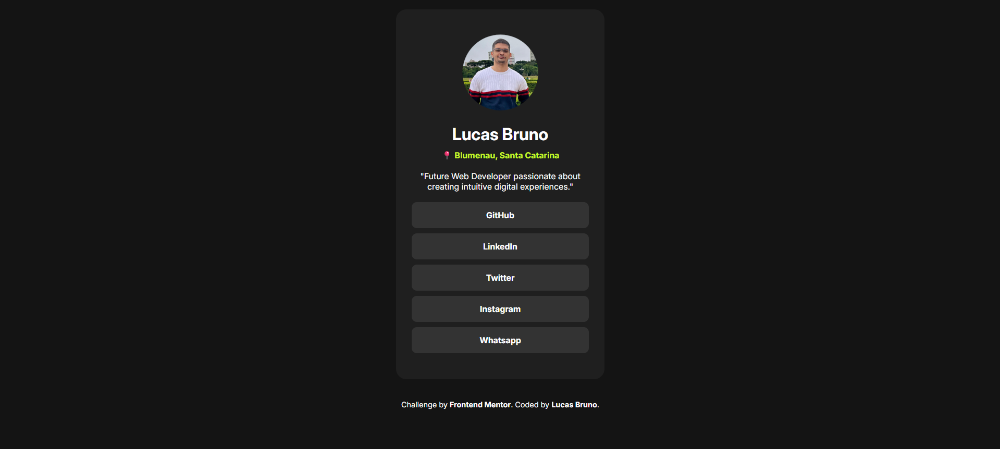
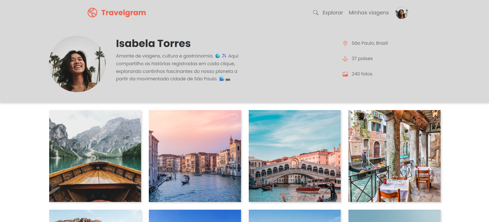
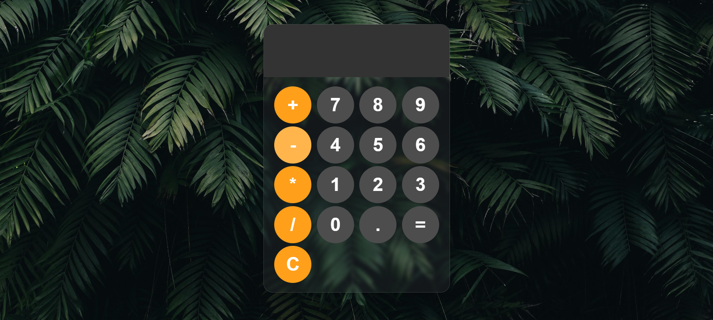

Minhas skills
Formação
2023
Unifacex
Gestão de Recursos Humanos
2025
Trybe
Curso: Lógica de Programação
2025
Rocketseat
Fundamentos de Programação Web (HTML, CSS e Javascript)
2025
Rocketseat
Básico de Git e GitHub
2026
SCTEC - SENAI
Introdução à Programação Front-end e Back-end
2026
SCTEC - SENAI
IA na Prática: Fundamentos da Inteligência Artificial
2026 ~ 2029
Uniasselvi
Análise e Desenvolvimento de Sistemas
Projetos

2025
Links Sociais #1
Aplicação simples e responsiva para reunir todos os seus links em um só lugar, como um cartão de visitas digital.
Inspirado em ferramentas como Linktree, mas desenvolvido do zero com HTML e CSS.
Saiba mais...
Veja o projeto on-line: Clique aqui.

2025
Links Sociais #2
Aplicação simples e responsiva que exibe uma interface de site de redes sociais (clone ou mockup).
Projeto desenvolvido como treino de HTML e CSS, com foco em estrutura semântica, responsividade e boas práticas de estilização. Desenvolvido como exercício da plataforma Rocketseat, utilizando HTML, CSS e JavaScript.
Saiba mais...
Veja o projeto on-line: Clique aqui.

2025
TravelGram
Projeto desenvolvido com HTML e CSS puro, inspirado no visual e na estrutura do Instagram, com foco em postagens de fotos de viagens.
O projeto tem como objetivo praticar conceitos de layout moderno e responsivo, utilizando Flexbox e CSS Grid Layout para organizar o conteúdo de forma harmônica e adaptável a diferentes tamanhos de tela. Rocketseat.
Saiba mais...
Veja o projeto on-line: Clique aqui.

2025
Calculadora Simples
Este projeto foi elaborado como forma de treinar e consolidar meus conhecimentos.
O projeto tem como objetivo praticar conceitos de HTML, CSS e JavaScript, aplicando conceitos de estrutura, estilização e interatividade em uma aplicação prática.
Saiba mais...
Veja o projeto on-line: Clique aqui.

2026
Login #01
Este projeto foi elaborado como forma de treinar e consolidar meus conhecimentos em desenvolvimento Front-End.
O projeto tem como objetivo praticar conceitos de HTML, CSS. Foram aplicados conceitos de estrutura e estilização em uma aplicação prática.
Saiba mais...
Veja o projeto on-line: Clique aqui.

2026
To-do List
Projeto de To-Do List desenvolvido como exercício prático para consolidar conhecimentos em HTML, CSS e JavaScript.
Aplicação simples e funcional de lista de tarefas, desenvolvida para treinar e consolidar conhecimentos em HTML, CSS e JavaScript.
Saiba mais...
Veja o projeto on-line: Clique aqui.

2026
Cores Aleatórias
Aplicação web simples que gera e exibe cores aleatórias em tempo real, desenvolvida para praticar HTML, CSS e JavaScript, com foco em interatividade, lógica e manipulação do DOM.
Saiba mais...
Veja o projeto on-line: Clique aqui.
2026
Agendamento Barbearia
Aplicação web simples desenvolvida para praticar HTML, CSS e JavaScript, com foco em interatividade, lógica e manipulação do DOM.
Saiba mais...
Veja o projeto on-line: Clique aqui.